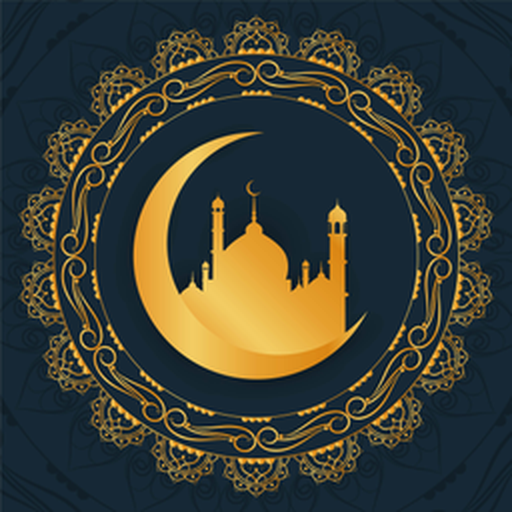

--°
الطقس
جاري التحديد...
الفجر--:--
الشروق--:--
الظهر--:--
العصر--:--
المغرب--:--
العشاء--:--
ضع الهاتف بشكل مسطح للحصول على دقة أفضل
--°
زاوية القبلة لموقعك: --° من الشمال
جاري توجيه البوصلة...
المظهر والتصميم
مظهر التطبيق
معاينة الألوان
إعدادات صوت الأذان
اختيار المؤذن
مستوى صوت الأذان: 100%
يتأثر أيضاً بمستوى صوت المنبه في هاتفك.
صوت التنبيه قبل الصلاة بـ 15 دقيقة
اختيار الصوت
إعدادات الإشعارات
إعدادات الموقع

مواقيت الصلاة والأذان
تطبيق الأذان والقبلة للأجهزة الذكية